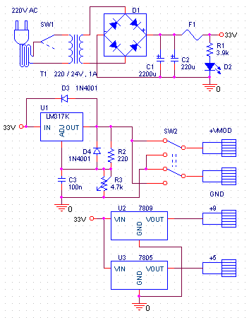
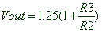
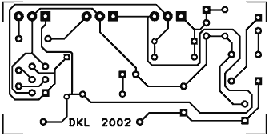
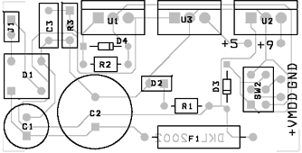
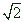

|
Βαρεθήκατε να πετάτε τις μπαταρίες τη μία μετά την άλλη; Ορίστε
η λύση. Ένα τροφοδοτικό που δίνει τάση και ρεύμα για σχεδόν ότι
χρειαστείτε.
Σε όποιον ασχολείται με τα ηλεκτρονικά είναι γνωστό πόσο απαραίτητη
είναι μιά μεταβλητή τάση τροφοδοσίας. Επίσης αν κάποιος ενδιαφέρεται
για ψηφιακά ηλεκτρονικά και μικροεπεξεργαστές, η τάση των +5V
του είναι απαραίτητη. Τέλος δεν πρέπει να ξεχνάμε όλες αυτές τις
συσκευές που λειτουργούν με τις 9βολτες μπαταρίες.
Όλα τα παραπάνω τα συγκεντρώνουμε σε ένα κύκλωμα, το τροφοδοτικό.
Αντέχει; Ναι, το έχω εδώ και 6 χρονια, έχει πέσει κάτω, έχει βραχυκυκλώσει,
έχει περάσει τα πάνδεινα κι όμως δουλέυει άψογα!
Αναλυτικά
Το τροφοδοτικό αποτελείται από 4 βαθμίδες, όπως φαίνεται στο
παρακάτω διάγραμμα. Η πρώτη πάνω - πάνω έχει ως είσοδο την τάση
των 220V από το δίκτυο και έξοδο την ανορθωμένη τάση +33V. Η τάση
αυτή είναι σταθερή όμως δεν είναι τελείως απαλαγμένη από παράσιτα.
Η τρίτη και η τέταρτη βαθμίδα κάτω - κάτω δίνουν σταθερές τάσεις
+5 και +9V. Αυτό γίνεται με τη βοήθεια των δύο σταθεροποιητών
7805 και 7809. Γενικά η οικογένεια των 78ΧΧ και 79ΧΧ δίνει ανορθωμένες
τάσεις +ΧΧ και -ΧΧ V αντίστοιχα. Η δεύτερη βαθμίδα είναι αυτή
που δίνει τη μεταβλητή τάση και χρησιμοποιεί το LM317 (U1).
|  |
| Το κύκλωμα του τροφοδοτικού |
Η τάση εξόδου του U1 δίνεται από τον πολύ απλό τύπο .
Οι δίοδοι D3 και D4 προστατεύουν το U1 από την εκφόρτιση πυκνωτών
του φορτίου. Ο διπλός διπολικός διακόπτης SW2 δίνει την δυνατότητα
να εναλλάσουμε γρήγορα την πολικότητα της τάσης εξόδου, χωρίς
να χρειαστεί να αποσυνδέσουμε το φορτίο. Αυτό είναι πολύ βολικό
σε πάρα πολλές περιπτώσεις.
Πρακτικά
Η κατασκευή του τροφοδοτικού είναι πολύ ενδιαφέρουσα. Tα υλικά
που θα χρειαστείτε είναι τα εξής:
| Υλικά |
| R1 |
3.9k |
| R2 |
220Ω |
| R3 |
4.7k γραμμικό ποντεσιόμετρο |
| C1 |
2200μF 40V |
| C2 |
220μF 40V |
| C3 |
100n |
| U1 |
LM317 |
| U2 |
7809 |
| U3 |
7805 |
| D1 |
Γέφυρα ανόρθωσης 1.5A |
| D2 |
Led 5mm |
| D3,4 |
1N4001 |
| F1 |
Θήκη και ασφάλεια 1.5A |
| SW1 |
διακόπτης 220V |
| SW2 |
διπλός διπολικός διακόπτης |
| Τ1 |
Μετασχηματιστής 220/24V 1Α |
| 4 x Θήκες για βύσματα -
μπανάνες |
| Κουμπί για την R3 |
| Καλώδιο για 220V |
| Μία καλή ψύκτρα πλάτους
5cm |
| Μονωτηράκια & βίδες
για ψύκτρα |
| Ένα ωραίο κουτί |
Μπορείτε να το συναρμολογήσετε στην παρακάτω πλακέτα:
|  |
|  |
Η πλακέτα της κατασκευής και η
τοποθέτηση των εξαρτημάτων |
 |
Το μέγεθος της είναι (τεράστιο) 2,5 χ 5cm συνεπώς κανένας δεν θα
πρέπει να έχει πρόβλημα στην κατασκευή της.
 Προσοχή
στην ψύξη του κυκλώματος. Χρειάζεται μία καλή ψύκτρα πάνω στην
οποία θα βιδωθούν τα U1-3. Έχει προβλεφθεί στην πλακέτα έτσι ώστε
να είναι έυκολη η ψύξη τους. Μην ξεχάσετε να τα μονώσετε με ειδικά
μονωτηράκια ώστε να μη βραχυκυκλώνει το U1 με τα άλλα δύο. Προσοχή
στην ψύξη του κυκλώματος. Χρειάζεται μία καλή ψύκτρα πάνω στην
οποία θα βιδωθούν τα U1-3. Έχει προβλεφθεί στην πλακέτα έτσι ώστε
να είναι έυκολη η ψύξη τους. Μην ξεχάσετε να τα μονώσετε με ειδικά
μονωτηράκια ώστε να μη βραχυκυκλώνει το U1 με τα άλλα δύο.
Αν δεν πάθεις
δε θα μάθεις. Όταν αγόρασα τον μετασχηματιστή, ζήτησα έναν μετασχηματιστή
1A ενώ ήθελα 1W! Όπως καταλαβαίνετε ο μετασχηματιστής ήταν πολύ
μεγαλύτερος και ακριβότερος από ότι περίμενα αλλά τελικά μου βγήκε
σε καλό! Αν είχα πάρει μετ/τη του 1W θα μπορούσα να τραβήξω μόλις
30mA ρεύμα το οποίο δεν φτάνει για σχεδόν τίποτα!
Μα δεν τελείωσε
εκεί η απειρία μου. Ζήτησα μετ/τη 220/30V μιας κι εγώ τέτοια τάση
ήθελα. Δεν ήξερα όμως ότι μετά την γέφυρα ανόρθωσης D1 η τάση πολαπλασιάζεται
επί
. Όταν το έμαθα φυσικά ήταν αργά. Το τροφοδοτικό ζεσταινόταν αμέσως
και ενεργοποιήτω η προστασία. Τελικά άνοιξα τον μετασχηματιστή (!!)
και άρχισα να ξετυλίγω το δευτερεύον μέχρι που έφτασα την τάση στα
24V! Επιπλέον ο όγκος του μειώθηκε θεαματικά και χωρούσε καλύτερα
στο κουτί μου!
Το κύκλωμα αυτό είναι πολύ χρήσιμο σε όλους και όσοι το κατασκευάσουν
θα με θυμηθούν.
|